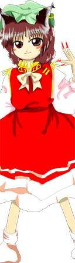

- Welcome to Touhou Wiki!
- Please register to edit. For assistance, check in with our Discord server or IRC channel.
Chen
Chen (♫) | |
|---|---|
|
Chen in Perfect Cherry Blossom Black Cat of Bad OmensMore Character Titles | |
| Species | |
| Abilities |
Use of sorcery (possessed as shikigami), Surprising People (as bakeneko) |
| Occupation | |
| Location | |
Music Themes | |
| |
Appearances | |
| Official Games | |
| |
| Print Works | |
| |
Chen (橙) is Ran Yakumo's shikigami, who was guarding the village of Mayohiga during the events of Perfect Cherry Blossom. Unfortunately, she could put up little resistance due to being far away from her master.
General Information[edit]
Chen first appeared as the second stage midboss and boss of Perfect Cherry Blossom, along with being the extra stage midboss and Ran Yakumo's familiar in one of her spell cards. She was also Yukari Yakumo's familiar in Immaterial and Missing Power, Scarlet Weather Rhapsody, and Antinomy Of Common Flowers, and was a target on Stage 6 of Shoot the Bullet. Additionally, she made a background appearance in Hopeless Masquerade.
She is a bakeneko youkai that Ran Yakumo uses as shikigami, but since Ran herself is Yukari's shikigami, she is a "shikigami of a shikigami". When possessed as a shikigami, Chen aquires the fearsome power of a kishin, but since her master is also a shikigami, her ability is fairly low.[1] The possession is removed when she is soaked in water, and since she also hates water as a cat, she is in any case weak to water. Her height is "low"[2] and is capable of human speech. She can use impressive black arts, but only possesses the intellect of a human child. Whether she is possessed or not, her personality and appearance don't change.[1]
She ordinarily lives on Youkai Mountain.[3] In Bohemian Archive in Japanese Red, she made the village of cats and tried to stand as the leader, but the progress has been unfavorable.
Ability[edit]
The way her abilities show up in the game itself is that she runs around the screen so freely in a way that is not expected of a boss of a shooting game, which is characteristic of her (as one would expect of a cat). This could be considered cute if she were an ordinary cat, but it also makes her slightly more tricky to deal with due to her speed and deceptive movement, which can confuse her opponent. Another characteristic of her is how she spins around and around while attacking, somewhat like her master.
- Use of sorcery (while possessed as shikigami)
In shikigami state, Chen becomes extremely dangerous and is able to use various kinds of sorcery. She uses techniques that focus on speed and precise, tricky movements to confuse her opponents, making it very similar to sleight of hand. For example, she could make it appear as if she is dashing to the left, but will then attack from the right instead, moving so quickly that to humans it appears like instant teleportation.[3]
- Surprising people (as bakeneko)
When she becomes a regular bakeneko, she becomes more feral and will resort to more physical attacks like biting and clawing with her long nails. Rather than saying she possesses a special ability to surprise accompanying humans, it is more strongly an implication that she's not able to do anything other than things of this extent. (However, even so, for ordinary humans it is dangerous enough). This is the same ability that Kogasa Tatara has - thus in this aspect, they have mutuality.
Occupation[edit]
Chen serves as a shikigami to Ran Yakumo, and becomes much stronger when her master is present. However, she hates water, and splashing her will dispel the shikigami possession, making her resort to physical attacks. She is also very fond of catnip, and will lose the will to fight if some is scattered to distract her.
Character Basis[edit]
Name[edit]
Her full name is Chen (橙). The kanji in her name can be literally translated as the color "bitter orange" in the Japanese Language, or simply "orange" in Chinese. All of the Yakumo family are named after the names of color. Why Chen appears before Ran and Yukari comes from the fact that the orange light has physically lower energy than the indigo, Ran, and the violet, Yukari. The pronunciation of her name "Chen" is an obsolete Chinese reading of 橙. In Japanese, the character would be read as "tou" or "daidai"; in Mandarin, "chéng".
Design[edit]
In her first appearance, Chen has dark brown eyes, brown hair and wears a green mob cap. She has black cat ears, with a gold earring in the left one, and two tails. Her dress is red with a white bow on the collar, with gold trimming and light pink frills at the bottom. The dress has light pink sleeves. She wears socks and has long hot pink fingernails.
Story[edit]
| Attention: This section is a stub and it needs expanding with more information related to the section's topic. If you can add to it in any way, please do so. |
- Perfect Cherry Blossom
Chen first appears in the second stage guarding the village of Mayohiga, but she is promptly defeated by the heroine. Later in the extra stage, she guards the path to Ran Yakumo, and is much more powerful due to her master's proximity, but was again defeated.
Spin-offs[edit]
- Fighters
Chen appeared in Immaterial and Missing Power, Scarlet Weather Rhapsody, and Touhou Hisoutensoku as a projectile in Yukari's spell card Shikigami "Chen". In Antinomy of Common Flowers she gets used in the same way, this time in a combined move with her master Ran Yakumo.
- Shoot the Bullet
In Shoot the Bullet, Aya Shameimaru encountered Chen on stage 6 and took photos of her danmaku.
- Hopeless Masquerade
Chen made a background cameo appearance in Hopeless Masquerade on the Hakurei Shrine stage. She is seen standing with Ran Yakumo cheering (as a little animation).
Literature[edit]
- Bohemian Archive in Japanese Red
Aya investigates an abandoned village inhabited entirely by cats. When she arrives, she finds Chen and cat anarchy. Chen explains that she gathered the cats there in search of a servant to call her own.
By the time Aya returns for an interview, Chen still has not managed to establish a solid leadership role for herself. Aya tells her that she lacks power and that she should reflect on the nature of the relationship between her and her master Ran. She recommends using a mouse (which Chen objects to).
Relationships[edit]
Ran and Yukari[edit]
Ran Yakumo is her master and Yukari Yakumo is her master's master.
Gallery[edit]
Chen at the Road of Liminality in Perfect Memento in Strict Sense
Chen's Sigil in the Grimoire of Marisa
Illustration of Chen in Bohemian Archive in Japanese Red
Another illustration of Chen from Bohemian Archive in Japanese Red
Chen and Ran cameo in Extra of the Wind
Chen's different color palettes from Antinomy of Common Flowers, followed by Yukari's palettes. The last two palettes were added in v1.10
Spell Cards[edit]
| Name | Translated | Comments | Games | Stage | ||
|---|---|---|---|---|---|---|
| Total: 16 | ||||||
| 仙符「鳳凰卵」 | Hermit Sign "Fenghuang Egg" | PCB GoM |
St. 2: E/N -- | |||
| 仙符「鳳凰展翅」 | Hermit Sign "Fenghuang's Spread Wings" | PCB | St. 2: H/L | |||
| 式符「飛翔晴明」 | Shikigami Sign "Soaring Seiman" | PCB | St. 2: E/N | |||
| 陰陽「道満晴明」 | Yin Yang "Douman-Seiman" | PCB | St. 2: H | |||
| 陰陽「晴明大紋」 | Yin Yang "Seiman-Daimon" | PCB | St. 2: L | |||
| 天符「天仙鳴動」 | Heaven Sign "Tianxian's Rumbling" | PCB | St. 2: E/N | |||
| 翔符「飛翔韋駄天」 (鬼神「飛翔韋駄天」) |
Flight Sign "Soaring Idaten" (Kishin "Soaring Idaten") |
GoM's version is a misprint of PCB's version | PCB GoM |
St. 2: H -- | ||
| 童符「護法天童乱舞」 | Servant Sign "Gouhou-Tendou's Wild Dance" | PCB | St. 2: L | |||
| 仙符「屍解永遠」 | Hermit Sign "Shikai Immortality" | PCB | St. 2: E/N | |||
| 鬼符「鬼門金神」 | Oni Sign "Kimon Konjin" | PCB | St. 2: H | |||
| 方符「奇門遁甲」 | Direction Sign "Kimontonkou" | PCB | St. 2: L | |||
| 鬼符「青鬼赤鬼」 | Oni Sign "Blue Oni Red Oni" | PCB | St. Ex | |||
| 鬼神「飛翔毘沙門天」 | Kishin "Soaring Bishamonten" | PCB | St. Ex | |||
| 星符「飛び重ね鱗」 | Star Sign "Leaping Kasane-Uroko Star" | StB | St. 6 | |||
| 鬼神「鳴動持国天」 | Kishin "Rumbling Jikokuten" | StB GoM |
St. 6 -- | |||
| 化猫「橙」 | Bakeneko "Chen" | StB | St. 6 | |||
Additional Information[edit]
- Chen is one of the few Touhou Project characters in the Windows series to not have a last name (Others being Cirno, Kisume, Wakasagihime for example).
- Chen is the only character to only have one kanji in her name.
- Chen's fifth color palette in Antinomy of Common Flowers resembles Remilia Scarlet and her sixth slightly resembles Keine Kamishirasawa's hakutaku form.
Fandom[edit]
Official Profiles[edit]
|  | ○凶兆の黒猫
橙（チェン）
主に妖術を扱う程度の能力を持つ
式神だからといって普段は御札とかではなく、普段も同じ姿をしていて、区別は付かない。 式神を付けていない普段も人語を話し、普通に飛び回るが、せいぜい人を驚かす程度の能力しか持たない。あと、見た目や性格は変らないが、冬は炬燵で丸くなる。
|
Black Cat of Bad Omens
Chen Stage 2 Boss, a bakeneko living in a mountain possessed as a shikigami. She possesses the ability to handle sorcery. Her true form is Ran's shikigami, which makes her a shikigami of a shikigami of a youkai. Although she's a shikigami, her normal form is not always in a form of a charm, she can remains in her human-like form in normal situation so it won't be bothersome to classify her types. Even without being in shikigami possession she can speak the human language and fly around, but she would merely have the ability to the extent of surprising people. Also, while not being possessed, neither her appearance nor personality changes, but she still curls up by a kotatsu in the winter. Bakeneko acquire fearsome power when possessed by a kishin, but since Chen's user is also a shikigami, her ability is fairly low. Getting touched by water dispels her shikigami possession. As a bakeneko her normal form also hates water, so she is always weak against water. |
| ○すきま妖怪の式の式
橙（チェン）
前の怪我が完治して間も無いのに、再び闘う事となるとは。 今度は主の近くで、一段と強い妖力を持っているが、その力は、目の前の人間に通用するのだろうか？ |
Shikigami of the Shikigami of the Gap Youkai
Chen Extra Stage midboss. While in the middle of fully recovering from the injuries of her previous defeat, Chen is set for a second round of combat. Her master is in the vicinity this time around, so her power has been amplified considerably. Would that power work on the human before her? |
Official Sources[edit]
- 2003/08/17 Perfect Cherry Blossom - Stage 2 dialogue; Extra Stage dialogue; キャラ設定.txt (Official profile)
- 2005/12/30 Shoot the Bullet - Stage 6 Spell Card comments
- 2005/08/17 Bohemian Archive in Japanese Red - Article and Interview: Chen
- 2006/12/27 Perfect Memento in Strict Sense - Pefect Memento in Strict Sense: Chen
- 2009/07/28 The Grimoire of Marisa - Chen's Spell Cards
- 2011/03/26 Oriental Sacred Place - Chapter 12 (cameo)
References[edit]
- ↑ 1.0 1.1 Perfect Cherry Blossom - Chen's profile
- ↑ ZUN's E-mails
- ↑ 3.0 3.1 Perfect Memento in Strict Sense: Chen
| This page is part of Project Characters, a Touhou Wiki project that aims to write proper descriptions for all official characters of Touhou Project. Please keep the character page guidelines in mind when contributing. |